Classification Results
We evaluated several models to distinguish single-site events (SSE) from multi-site events (MSE) across four PSD label types. Because the optimal approach depended on the specific label, our final selected models vary: XGBoost for High AvsE, Random Forest for Low AvsE and LQ, and a Neural Network for DCR.
Chosen Model: XGBoost. It effectively isolated background features in a severely imbalanced dataset, maintaining high precision while correctly capturing essential timing and pulse-shape information.
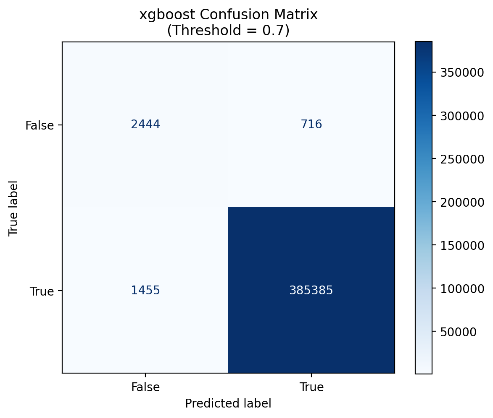
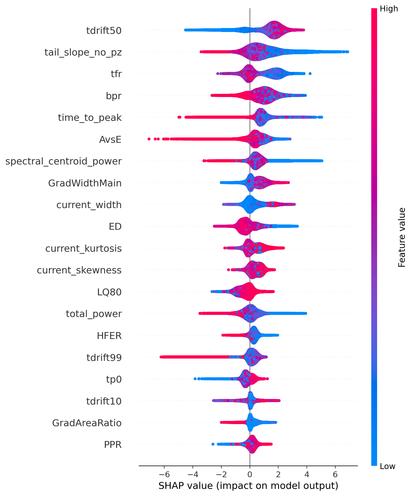
The confusion matrix shows how accurately the XGBoost model predicts outcomes across nearly 390,000 cases. At a confidence threshold of 0.7, the model correctly identifies over 99% of positive cases (385,385 true positives) while keeping errors minimal — only 716 false positives and 1,455 false negatives.
The SHAP chart reveals what drives those predictions. Each dot represents a single case — its horizontal position shows the impact on the model's output (right = pushes toward positive, left = pushes toward negative), and its color reflects the feature's value (red = high, blue = low). The top contributing features are:
- tdrift50 — the most influential overall, with high values strongly favoring a positive prediction.
- tail_slope_no_pz and time_to_peak — low values act as suppressing signals.
- AvsE — extreme low values serve as a strong disqualifying signal.
Features lower on the chart, such as GradAreaRatio and PPR, contribute more subtly but still play a role in the final prediction.
Chosen Model: Random Forest. Selected for its ability to capture nonlinear dependencies, it achieved a high recall—which is critical in rare-event searches to minimize the loss of true signal events.
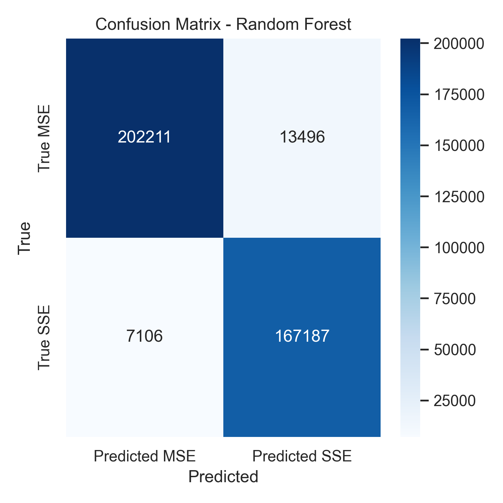
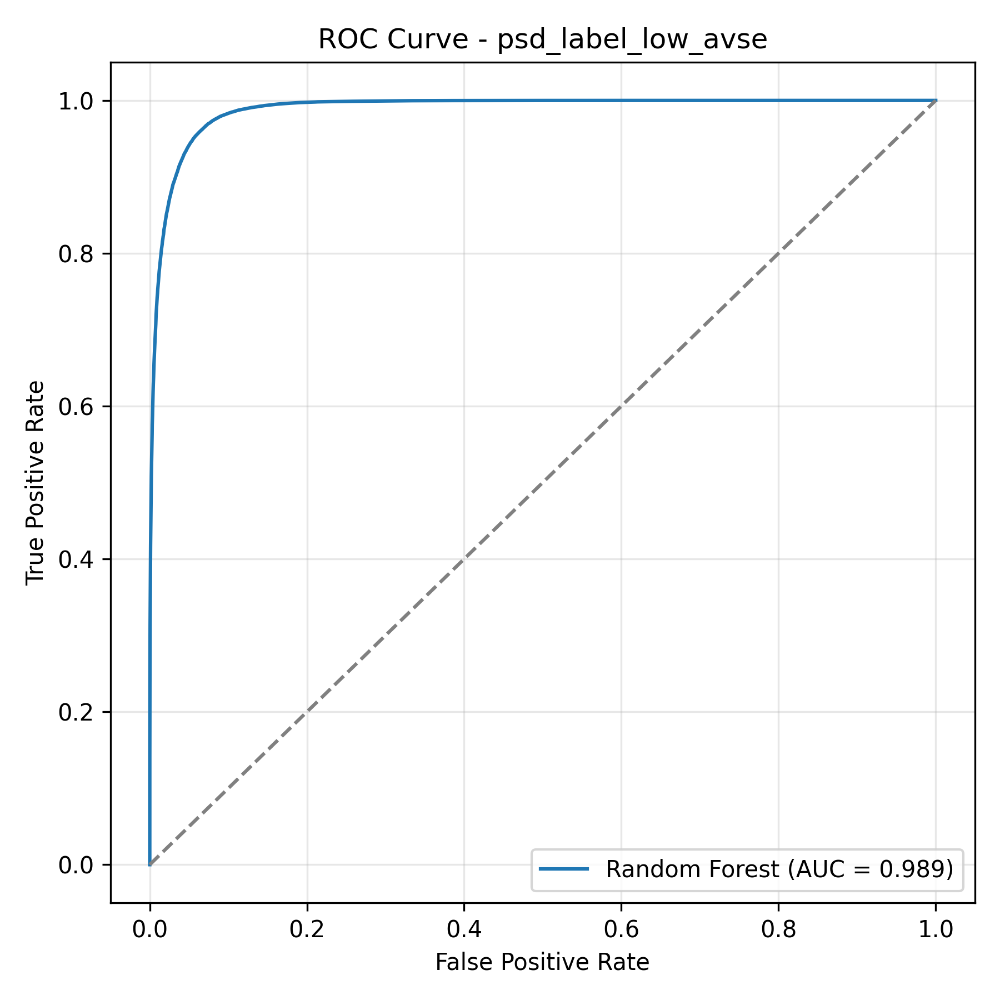
The confusion matrix breaks down every classification decision on the test set. Of 215,707 background events, 202,211 were correctly rejected. Of 174,293 signal events, 167,187 were correctly kept. The result: 95.9% signal retention and 93.7% background rejection which represents a strong balance between keeping real physics and filtering out noise.
The ROC curve measures how well the model separates signal from background across all possible decision thresholds. An AUC of 0.989 out of 1.0 means the model correctly identifies nearly all signal events while keeping background contamination low. The steep rise toward the top left corner and far from the diagonal confirms that our engineered waveform features contain far more discriminating power than traditional single parameter cuts.
Chosen Model: Neural Network. This model provided the best performance for identifying delayed charge recovery. Since the class had an imbalance of extreme 98.1% class imbalance, like most other models the Neural Network was able to produce great results when predicting the dominant class but also, reducing false negatives better than other models when looking at the less dominant class.
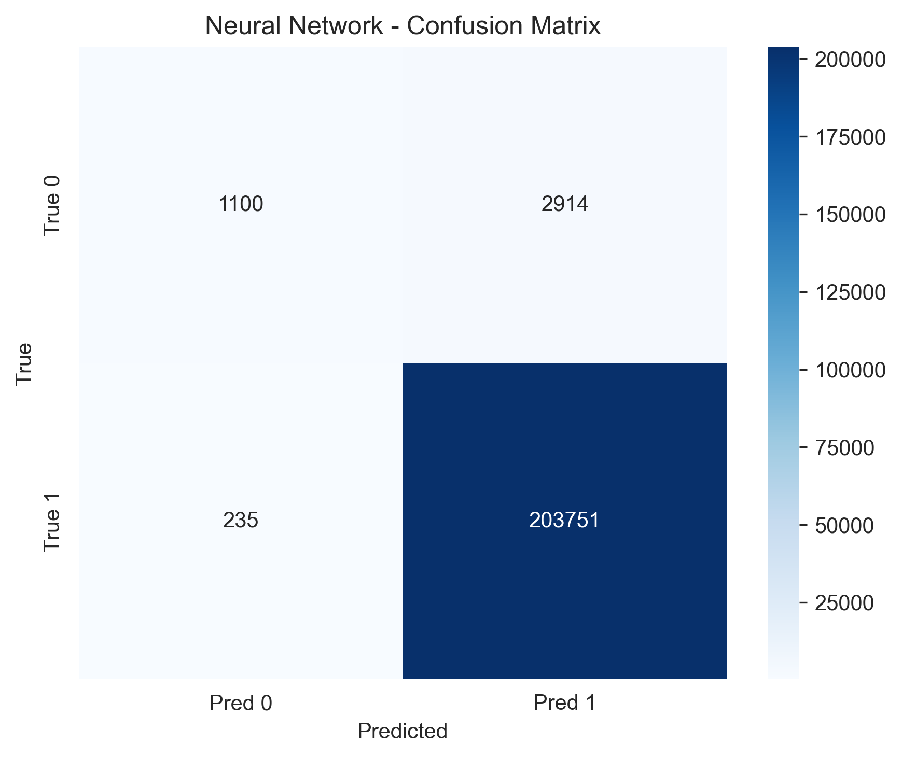
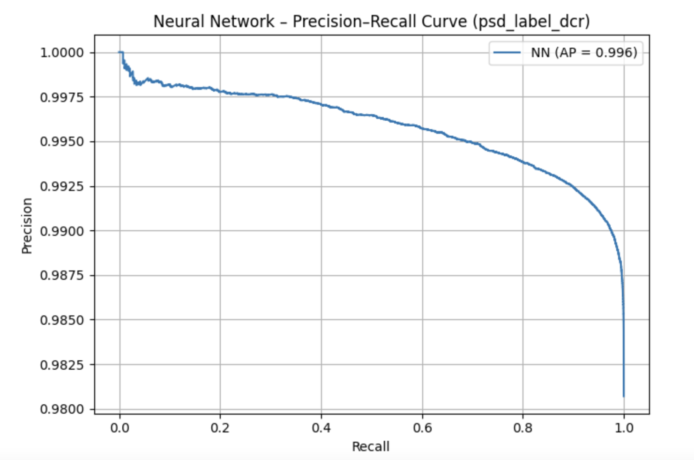
The plot on the left shows a confusion matrix that demonstrates that the neural network achieved highly accurate classification for the DCR label, with very few false positives or false negatives. The plot on the right shows a precision-recall curve which also shows strong performance despite the heavy class imbalance, indicating that the model was able to preserve recall while maintaining high precision. Together, these results confirm that the neural network was the most effective model for DCR classification.
Chosen Model: Random Forest. A threshold-tuned Random Forest model was selected for identifying late charge events. Calibrating the decision threshold to 0.40 significantly improved the F1 score, proving nonlinear boundaries were necessary.
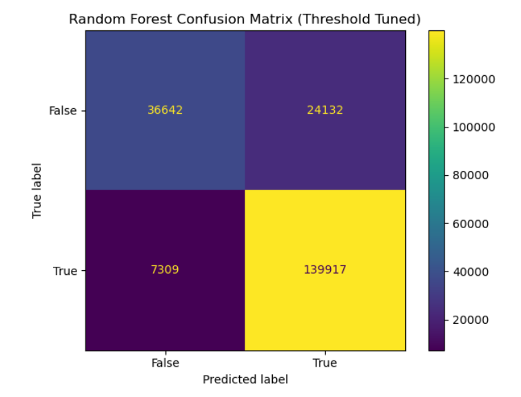
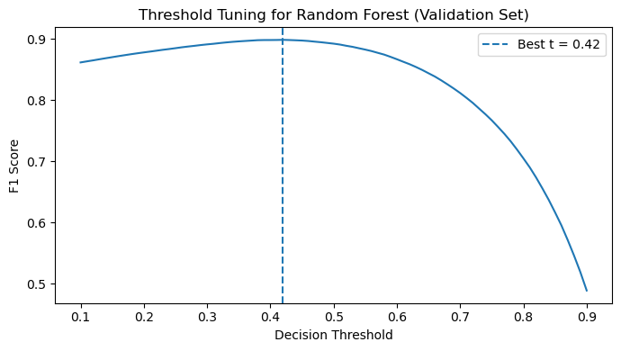
The left plot shows the confusion matrix for the threshold-tuned Random Forest model used to classify late charge (LQ) events. The model achieves strong performance with a high number of correctly classified events in both classes, reflected in the high recall and overall F1 score. This indicates that the nonlinear decision boundaries learned by the Random Forest are effective for separating LQ events from non-LQ events.
The right plot shows the threshold tuning curve for the Random Forest classifier on the validation set. Instead of using the default probability threshold of 0.5, we evaluated different decision thresholds and measured the resulting F1 score. The optimal threshold was found near 0.42, which maximizes the balance between precision and recall. Using this tuned threshold significantly improved the model’s classification performance compared to the default setting.
Energy Reconstruction
To reconstruct continuous energy values from waveform features, we evaluated Linear Regression, XGBoost, and LightGBM. XGBoost was selected as the final model due to its superior precision and best overall agreement with the true energy distribution.
Served as our baseline. It captured broad spectral shapes but smoothed out sharp features and deviated at high energies, proving linear boundaries are insufficient for charge collection dynamics.
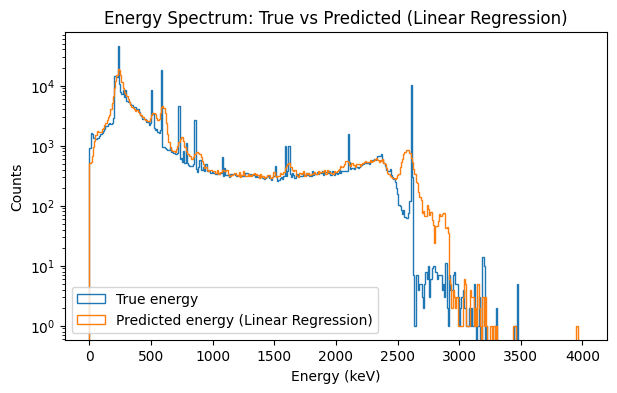
The plot above compares the true energy spectrum of detector events (blue) with the predicted energies from the linear regression baseline model (orange). While the model is able to approximate the overall distribution of events across the 0–4000 keV range, it struggles to reproduce the sharp spectral peaks present in the true data. These peaks correspond to known physical signatures in the detector, and their smoothing in the predicted distribution indicates that the linear model cannot fully capture the underlying relationships between waveform features and deposited energy.
This limitation is reflected in the model’s higher reconstruction error, with an RMSE of 76.79 keV. Because linear regression assumes a simple linear relationship between input features and energy, it cannot model the complex nonlinear charge collection dynamics present in the detector signals. As a result, this baseline provides a useful point of comparison but motivates the use of more flexible models such as gradient boosted trees for accurate energy reconstruction.
An alternative gradient-boosted approach that also performed exceptionally well, producing very few large errors and maintaining the physical structure of the true energy spectrum.
.png)
.png)
The energy spectrum plot compares the true energy distribution of events (blue) against our model's predictions (orange) across 0-4000 keV. The two lines track closely, including the sharp peaks that represent known physical signatures of the calibration source. The LightGBM model model achieves an RMSE of 30.90 keV which is a 60% improvement over the linear baseline while preserving the spectral shape that a potential neutrinoless double beta decay signal would appear in.
The SHAP summary plots shows how much each feature influenced the model's energy predictions. Total spectral power dominates which is expected, since more deposited energy means a stronger electrical signal overall. Secondary features like tail slope and drift time provide fine corrections. The model independently discovering these physically meaningful relationships confirms it is learning real detector physics, not statistical noise.
Chosen Model. It reduced RMSE by over 56% compared to the baseline, successfully preserving key peak positions by utilizing total signal power and localized nonlinear corrections.
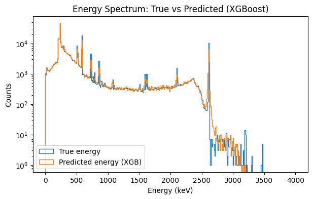
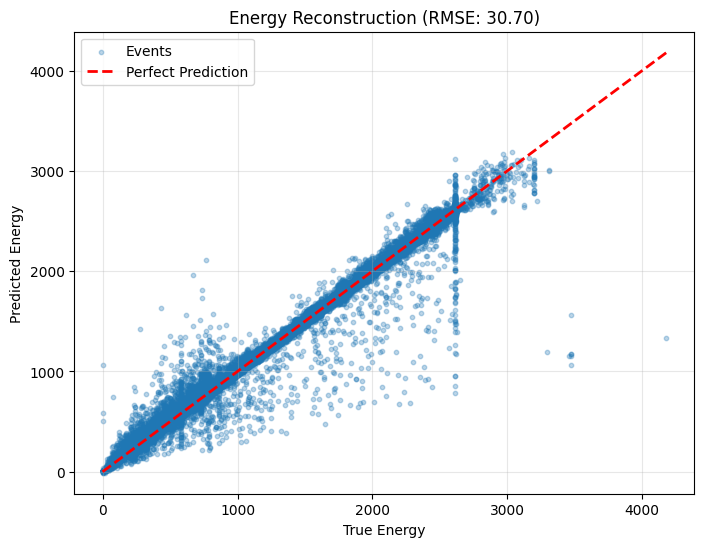
The left plot shows the energy spectrum comparison between the true event energies (blue) and the predictions produced by the XGBoost regression model (orange). The predicted distribution closely follows the structure of the true spectrum across the full 0–4000 keV range, including the prominent calibration peaks. Preserving these peak locations is important because potential physics signals, such as neutrinoless double beta decay, would appear as narrow features in this spectrum. The strong overlap between the two distributions indicates that the model successfully reconstructs the underlying energy structure of detector events.
The right plot shows the energy reconstruction performance by comparing predicted energy values against the true energies for individual events. The dashed red line represents perfect prediction, and most points cluster closely around this diagonal, demonstrating strong agreement between the model and the ground truth. The XGBoost model achieves an RMSE of 30.70 keV, representing a substantial improvement over the linear baseline. This result indicates that gradient boosted trees effectively capture nonlinear relationships between waveform features and deposited energy in the detector.
Beyond Traditional Physics Cuts
Why these machine learning models matter for the future of particle physics.
Our models demonstrate that detector waveform shapes contain enough information to accurately separate single-site signals from multi-site background events and to reconstruct energy spectrums[cite: 2579]. By using physics-motivated features, we proved that detector signals hold more useful structural data than what traditional physics cuts alone can capture[cite: 2580].
Every particle interaction leaves a tiny electrical fingerprint, and machine learning techniques can read these fingerprints more effectively than traditional analytical methods[cite: 2586]. This ultimately makes rare-particle searches like the Majorana Demonstrator Experiment much more sensitive[cite: 2585]. Ultimately, these models provide physics researchers with improved, highly accurate tools for background rejection and energy measurement in the ongoing search for neutrinoless double beta decay[cite: 2587].